The requested event never starts
The model is unresponsive: the source action continues, or the edit arrives only after the incompatible source event has already been replayed.
PEIYUAN ZHU · VIDEO ACTION EDITING
VADD · Data generation, identifiable action anchors, and qualitative evidence
Change the requested action while preserving source content that the edit does not target.
VADD learns action anchors from demonstrations and trains an editor to execute them under source conditioning. The data-generating process, identification result, method, and video evidence follow.
I · MOTIVATION
An action edit is valid only when the requested event occurs with the source-owned subjects and objects.
The model is unresponsive: the source action continues, or the edit arrives only after the incompatible source event has already been replayed.
A manipulated object materializes, disappears, or bypasses the intended physical relation instead of remaining the same source-owned instance.
Motion occurs, but the original actor or patient is replaced, re-rendered, or rebound. Plausible interaction cannot compensate for subject-preservation failure.
Action response, same-instance continuity, interaction topology, and subject preservation must all pass.
I · MOTIVATION · SELF-GENERATED DEMONSTRATIONS
Self-generated anchors reveal missing action mechanics; the editor should add only their source-faithful counterparts.
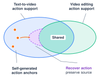
Orange anchors show that frozen T2V can generate an action mode that source-conditioned editing may still miss.
Its actor, objects, scene, and camera may differ. Only qualified event mechanics can transfer.
The recovered action must express the requested behavior while preserving source-owned identity, inventory, background, and unrelated motion.
I · MOTIVATION · DIRECT FAILURE EVIDENCE
Source-conditioned output can preserve source motion even when an action-only anchor makes the requested edit explicit.
Real target contracts into a ring and the anchor demonstrates strong bell-shape change. Frozen keeps the source jellyfish rounded and drifting; contraction never begins.
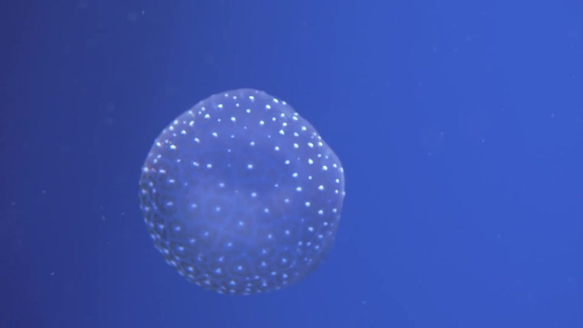
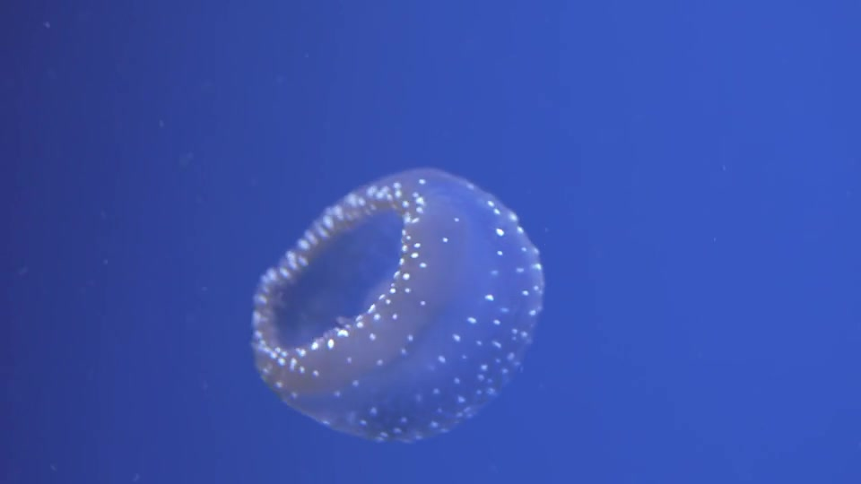
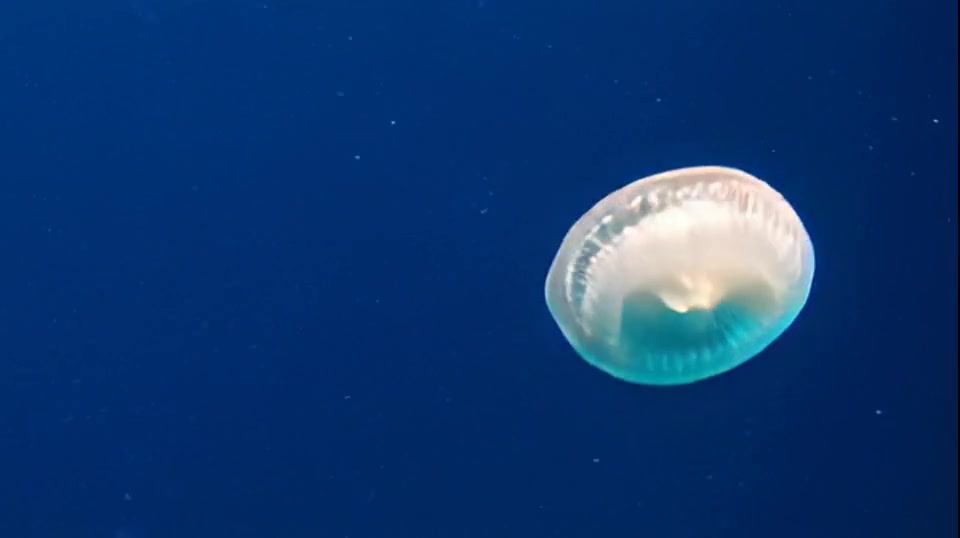
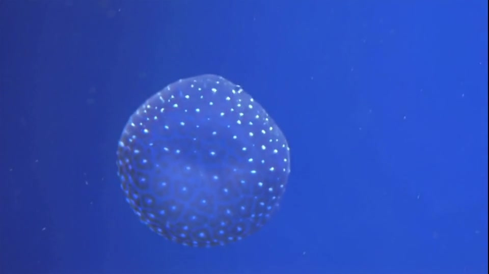
Target and anchor lift the phone and add tongue/wink behavior; frozen continues ordinary phone use.
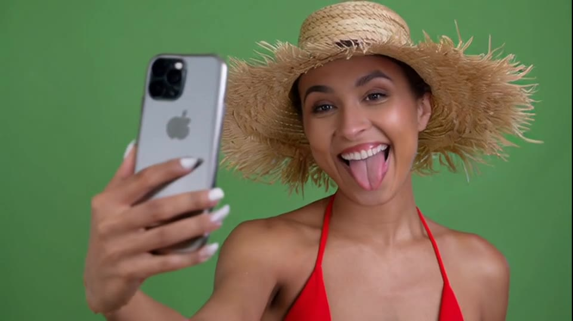
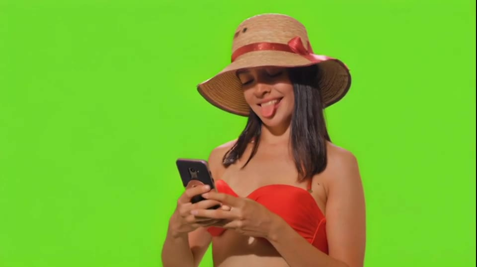
Bell contraction and the playful selfie exist in the target and action-anchor branches, but neither requested transition starts reliably in frozen source-conditioned editing.
I · MOTIVATION · FULL-SEQUENCE EVIDENCE
Frozen may reach part of the requested endpoint only after replaying most of the incompatible source sequence.
Frozen replays source-like in-place scarf motion for most of the clip, then begins a late turn. A late spin does not replace the earlier source event.
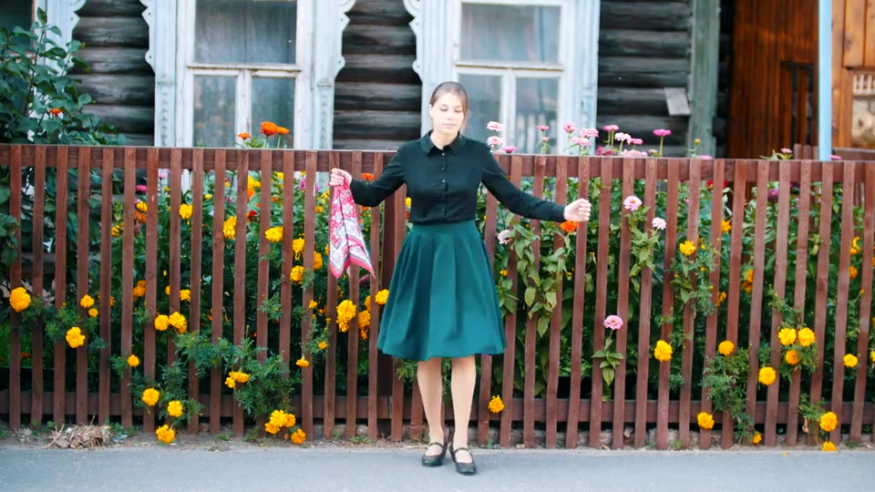
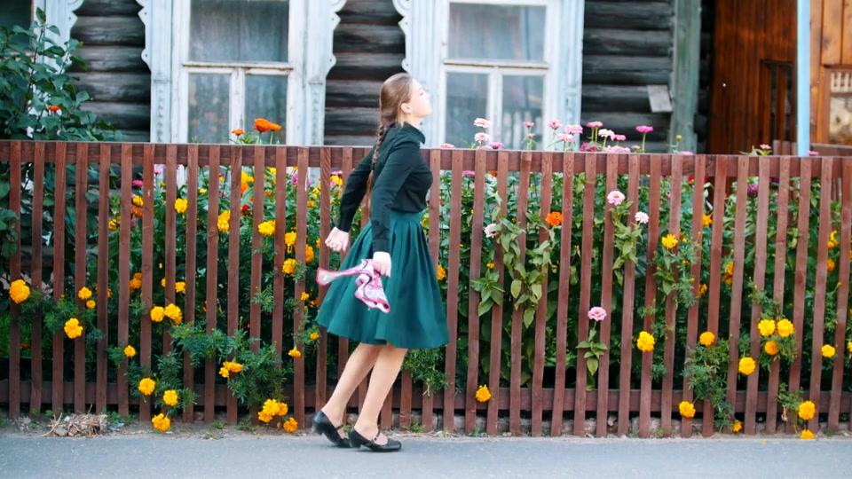
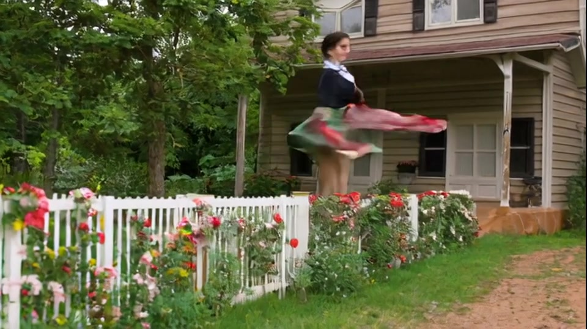
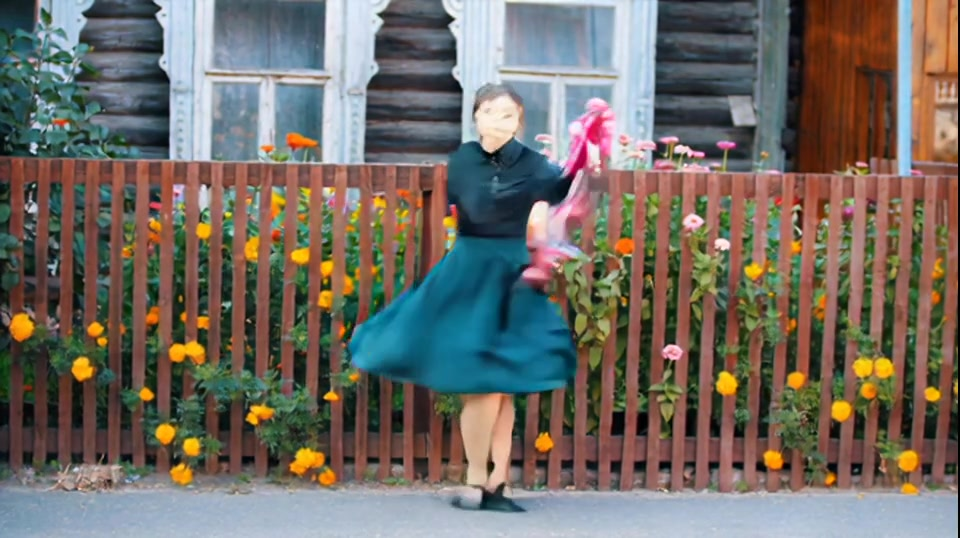
Frozen holds the source one-arm cover through most of the sequence, then adds the second hand late. Ordered eye-rubbing motion remains absent.
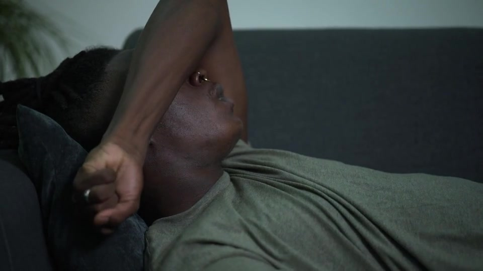
Sparse endpoint frames can look compliant while the full video remains source-driven. Later target similarity cannot erase an incompatible event that already occurred.
I · MOTIVATION · MANUAL FAILURE EVIDENCE
A delayed or partial response is still failure when the incompatible source event has already occurred.
Target and anchor turn and place the bottle; frozen keeps holding it and facing forward.
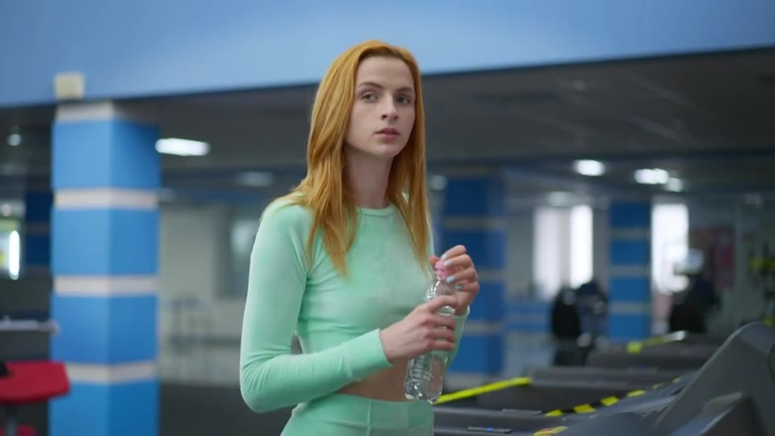
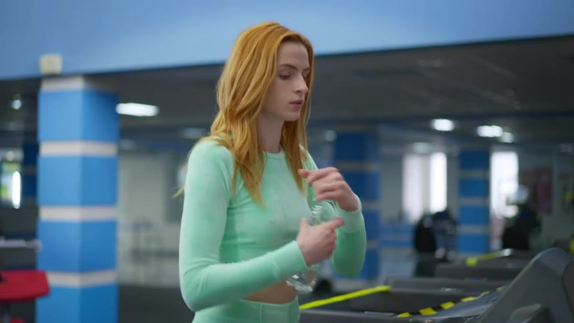
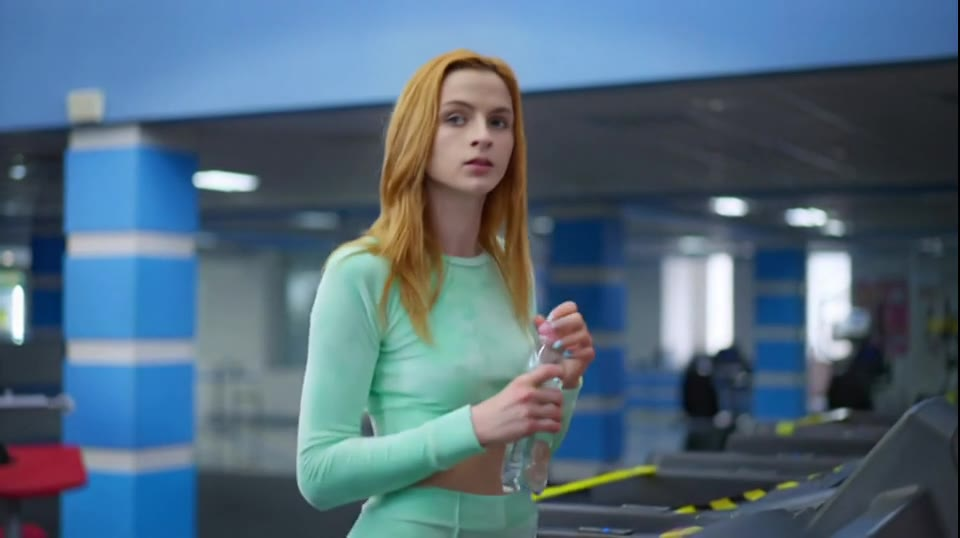
Frozen first inherits the complete bow, then only partially brings the hands together near the end.
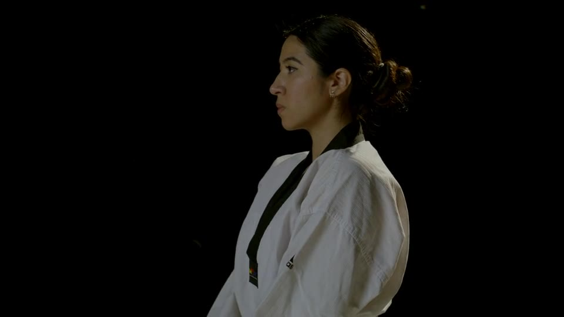
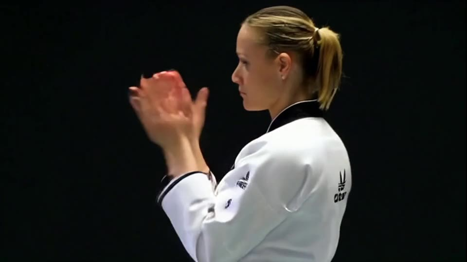
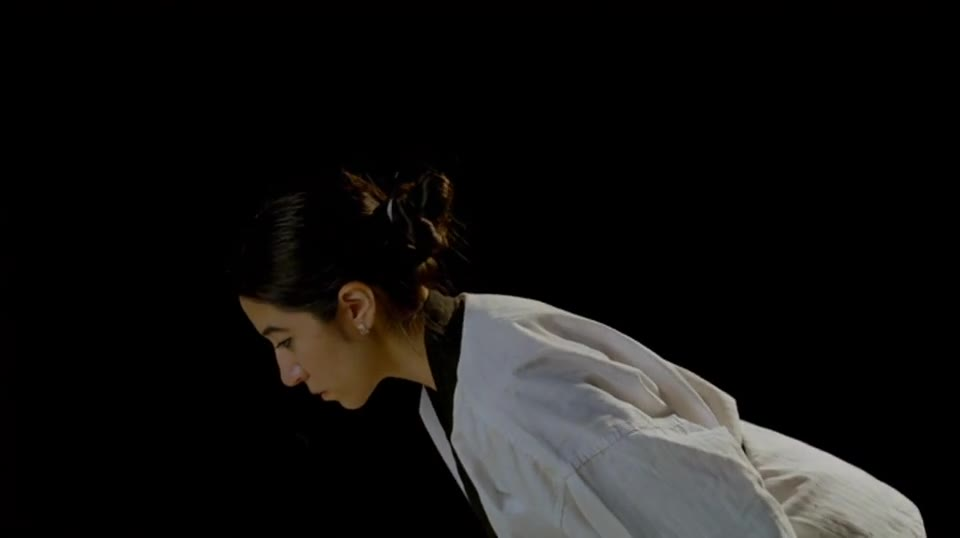
These frozen-editor examples retain the original source action. Check action execution together with subject and scene preservation.
I · MOTIVATION · PAPER AUDIT
128 source–target pairs · frozen Bernini-R 1.3B
| Candidate | Mean | Metric preferred | Human preferred |
|---|---|---|---|
| Self-generated T2V | −0.01031 | 125 / 128 | 114 / 128 |
| Source-conditioned edit | −0.14660 | 3 / 128 | 12 / 128 |
| Tie | — | 0 / 128 | 2 / 128 |
PAPER UPDATE · 01 / 06 · DATA GENERATING PROCESS
VADD: Video Action Editing via Demonstrations and Disentanglement
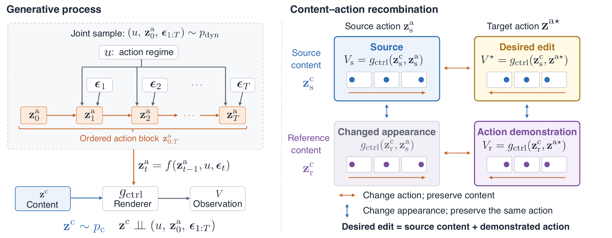
Content is independent of the initial state, action regime , and innovations. The renderer combines content with the full realized trajectory .
Preserve source content; transfer the demonstration’s trajectory, including its initial state and timing, within a fixed physical context.
Replay physical motion under two block appearances. Physics evolves the objects; a fixed camera and lighting render each clip.
§2.1 + Appendix D · The strict controlled model fixes physical context; real consecutive-event clips approximate this coupling. Manuscript source ↗
PAPER UPDATE · 02 / 06 · IDENTIFIABILITY
The positive pair shares the entire realized trajectory, not only the action label.
Agreement removes appearance variation. Prediction of a characteristic kernel embedding retains differences between action-conditional video distributions.
Optimize over continuous encoders, finite-risk predictors, and a code dimension admitting continuous injective trajectory coordinates.
is injective on a full-measure action subset; is the action-conditional kernel mean embedding. Individual semantic coordinates are not fixed.
§2.2 · Original manuscript equations. LaTeX source ↗ · Finite-data optimization and real-video patch views are outside this guarantee. Manuscript source ↗
PAPER UPDATE · 03 / 06 · TEMPORAL INFORMATION
Three observations identify position, velocity, and acceleration; two can remain ambiguous.
Temporal observability concerns the whole ordered clip. A single frame need not reveal the full action state.
The multiplicative map with symmetric nonzero content is invertible, yet . Predicting this mean can erase all action differences.
| Mixing / objective | Content | |||
|---|---|---|---|---|
| Shear · agreement + kernel | 1.00 | 1.00 | 0.97 | 0.00 |
| Multiplicative · same objective | 1.00 | 1.00 | 1.00 | 0.00 |
In the additive-feature corollary, action differences must survive outside the appearance-variation subspace. Ordinary feature prediction then retains action.
§2.3 + Appendix E · values are three-seed means from the paper’s numerical experiment, separate from rendered-video examples. Manuscript source ↗
PAPER UPDATE · 04 / 06 · REPRESENTATION LEARNING
A temporal model keeps ordered dynamics across spatial views of the same demonstration.
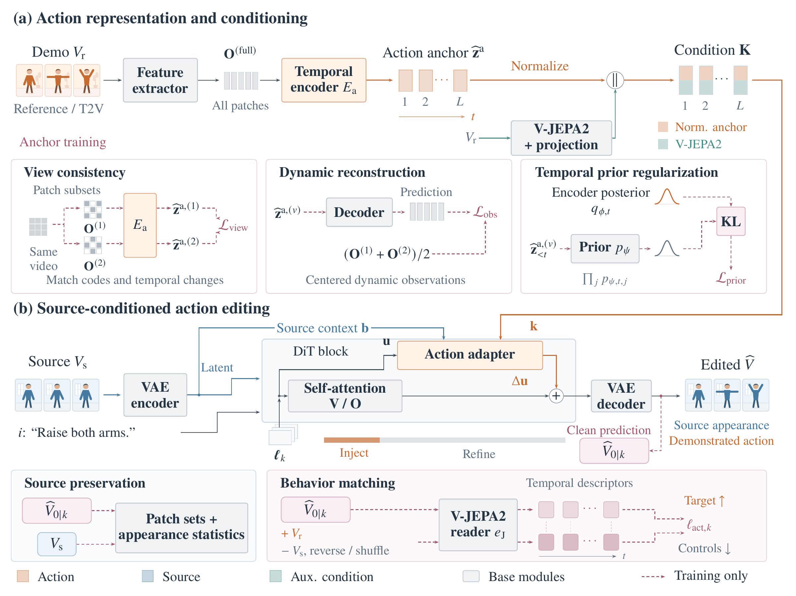
Frozen features → temporal centering, signed changes, and local change magnitudes. Alternating patches supply two views.
A bidirectional GRU predicts Gaussian posteriors. Their means are the action anchors; a recurrent, history-conditioned prior regularizes them.
SmoothL1 dynamic reconstruction + view consistency + KL / temporal regularization and reverse, shuffle, repeated-frame controls.
§3.1 · Same-scene patch views and mean-target SmoothL1 are practical surrogates for the population criterion. The prior is a temporal inductive bias. Manuscript source ↗
PAPER UPDATE · 05 / 06 · EDITOR
Action specifies the motion; the source provides the appearance and spatial context in which it is executed.
learned ordered action
complementary behavior features
phase-aligned feature concatenation
The first term couples the demonstrated action to the current generated state.
The second term modulates the action using spatial context from independently encoded source frames.
Adapters act on visual self-attention value / output projections during the first 8 of 40 sampling steps.
The identified object is the learned mean code. Normalization can discard offsets and scale; the augmented packet also includes V-JEPA2 features.
§3.2 + Appendix D · Frozen backbone and representation model; trainable residual adapters. Manuscript source ↗
PAPER UPDATE · 06 / 06 · TRAINING & INFERENCE
Supervise the decoded clean prediction with ordered behavior and source-preservation signals.
The frozen V-JEPA2 reader differentiates through generated videos. Demonstration and control descriptors are detached.
Compare patch sets and appearance statistics. Remove the gradient component opposing behavior, then cap preservation RMS at ¼ of the behavior-gradient RMS without amplifying it.
1,508 real source–target pairs; real-target and offline-generated demonstrations at 3:1. Action-code warm-up precedes behavior supervision.
No real target is read; inference needs neither behavior-reader gradients nor per-example optimization.
§3.3 + §4.1 / Appendix D · Warm-up followed by behavior supervision; inference uses a self-generated demonstration. Manuscript source ↗
EXPERIMENTS · QUANTITATIVE CONTEXT
Accuracy-gated scores from the manuscript · 0–100, higher is better · category counts in parentheses
| Method | Motion semantic (30) | Motion attribute (50) | Temporal composition (70) | Action (150) | Camera (50) | All (200) |
|---|---|---|---|---|---|---|
| VACE | 6.80 | 7.54 | 11.48 | 9.23 | 8.00 | 8.92 |
| ReCo | 5.59 | 3.14 | 6.46 | 5.18 | 16.43 | 7.99 |
| OmniVideo2 | 32.58 | 13.15 | 12.64 | 16.80 | 14.77 | 16.29 |
| Kiwi-Edit | 29.31 | 21.70 | 19.31 | 22.11 | 15.39 | 20.43 |
| LiveEdit | 18.80 | 13.92 | 10.79 | 13.44 | 7.32 | 11.91 |
| Bernini · frozen | 31.36 | 21.54 | 13.46 | 19.73 | 42.99 | 25.55 |
| VADD · ours | 34.93 | 24.96 | 17.64 | 23.54 | 46.16 | 29.19 |
| Direct-FM · reference | 38.23 | 14.56 | 15.85 | 19.90 | 25.82 | 21.38 |
23.54 vs. 19.73 across 150 non-camera cases.
29.19 vs. 25.55 across all 200 cases.
High-score cases are a showcase; the table summarizes the complete evaluation.
§4, Omni Temporal table · Direct-FM is a paired-target reference and is not ranked. The following archive scores use Qwen3-VL-32B / 12 frames. Manuscript source ↗
QUALITATIVE · OMNIBENCH
Delete the action of the girl giving a flying kiss, while maintaining the continuity of the video naturally.
Clips start together at their original speed. Shorter clips hold their last frame; use the full video link for individual controls.
QUALITATIVE · OMNIBENCH
Make the man laugh happily.
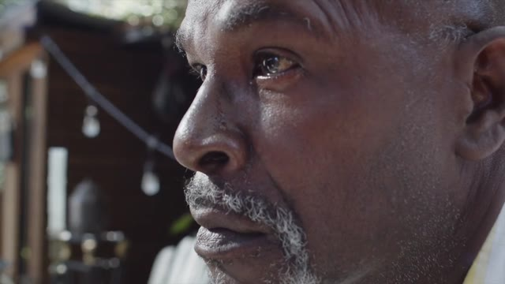
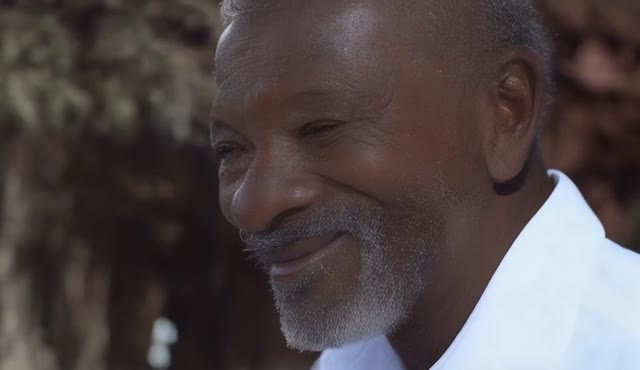
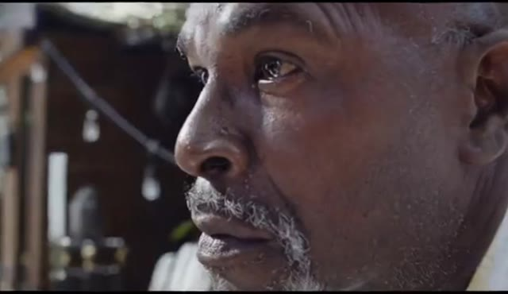
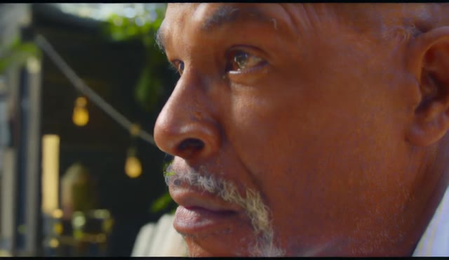
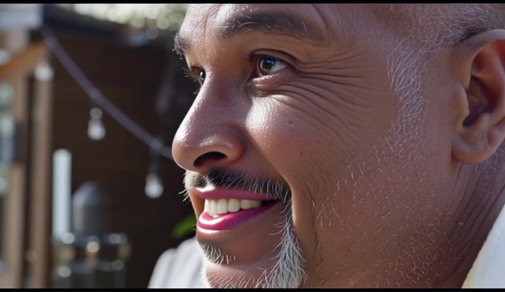
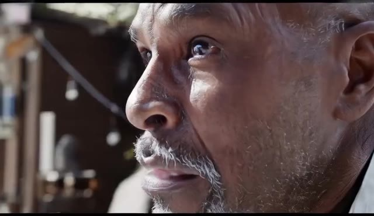
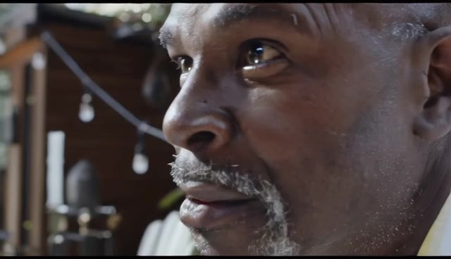
Clips start together at their original speed. Shorter clips hold their last frame; use the full video link for individual controls.
QUALITATIVE · SYNTHETIC
Keep the source block appearance while following the demonstrated trajectory.
Clips start together at their original speed. Shorter clips hold their last frame; use the full video link for individual controls.
Preserve source colors while following the reference motion. Compare the approach, direction changes, and final placement at 1× speed.
Uses the manuscript’s author-confirmed my/source pairing. The paper’s provenance note records the older source archive as incorrect. Expected frames are audit-only. Pairing record ↗
QUALITATIVE · SYNTHETIC
Keep the source block appearance while following the demonstrated trajectory.
Clips start together at their original speed. Shorter clips hold their last frame; use the full video link for individual controls.
Preserve source colors while following the reference motion. Compare the approach, direction changes, and final placement at 1× speed.


Uses the manuscript’s author-confirmed my/source pairing. The paper’s provenance note records the older source archive as incorrect. Expected frames are audit-only. Pairing record ↗
QUALITATIVE · REAL
Edit the action so that the woman raises her silver camera with both hands, bringing it up to her eye to look through the viewfinder.
Clips start together at their original speed. Shorter clips hold their last frame; use the full video link for individual controls.
Paired-real-target flow-matching variant; retained as labeled in the manuscript figure provenance. Asset provenance ↗
QUALITATIVE · REAL
Edit the action so that the camera cranes up, moving away from the couple and revealing a wide view of the sunlit forest and valley.
Clips start together at their original speed. Shorter clips hold their last frame; use the full video link for individual controls.
Paired-real-target flow-matching variant; retained as labeled in the manuscript figure provenance. Asset provenance ↗
QUALITATIVE · REAL
Edit the action so that the smiling woman in a bikini walks from left to right past the camera by a pool, exiting the frame.
Clips start together at their original speed. Shorter clips hold their last frame; use the full video link for individual controls.
Paired-real-target flow-matching variant; retained as labeled in the manuscript figure provenance. Asset provenance ↗
QUALITATIVE · REAL
Edit the action so that the mother helps her young daughter draw with colored pencils in a sketchbook at a wooden table.
Clips start together at their original speed. Shorter clips hold their last frame; use the full video link for individual controls.
Paired-real-target flow-matching variant; retained as labeled in the manuscript figure provenance. Asset provenance ↗
QUALITATIVE · REAL
Edit the action so that the woman working on a laptop at her desk suddenly experiences back pain and tries to stretch it out.
Clips start together at their original speed. Shorter clips hold their last frame; use the full video link for individual controls.
Paired-real-target flow-matching variant; retained as labeled in the manuscript figure provenance. Asset provenance ↗
QUALITATIVE · REAL
Edit the action so that the man wearing glasses looks at his smartphone and takes a drink from a white mug while sitting at his desk.
Clips start together at their original speed. Shorter clips hold their last frame; use the full video link for individual controls.
Paired-real-target flow-matching variant; retained as labeled in the manuscript figure provenance. Asset provenance ↗
VADD · DISCUSSION
A controlled theory, a practical editor, and visible motion transfer.
Independent appearance resampling and temporal observability identify the action block at population optimum.
Learn ordered action anchors, couple them to the source through early adapters, and supervise decoded behavior alongside preservation.
Controlled synthetic outputs, generated-reference Zebra, and the FM variant supply complementary qualitative evidence.